Draw a heatmap to visualise data in matrix form. This is the public,
exported interface — it accepts data in multiple input formats (matrix,
wide, or long), preprocesses it via process_heatmap_data,
and delegates to HeatmapAtomic for rendering. Commonly
used in biology to visualise gene expression, but applicable to any
matrix-structured data.
Usage
Heatmap(
data,
values_by = NULL,
values_fill = NA,
name = NULL,
in_form = c("auto", "matrix", "wide-columns", "wide-rows", "long"),
split_by = NULL,
split_by_sep = "_",
rows_by = NULL,
rows_by_sep = "_",
rows_split_by = NULL,
rows_split_by_sep = "_",
columns_by = NULL,
columns_by_sep = "_",
columns_split_by = NULL,
columns_split_by_sep = "_",
rows_data = NULL,
columns_data = NULL,
keep_na = FALSE,
keep_empty = FALSE,
rows_orderby = NULL,
columns_orderby = NULL,
columns_name = NULL,
columns_split_name = NULL,
rows_name = NULL,
rows_split_name = NULL,
palette = "RdBu",
palcolor = NULL,
palreverse = FALSE,
pie_size_name = "size",
pie_size = NULL,
pie_values = "length",
pie_name = NULL,
pie_group_by = NULL,
pie_group_by_sep = "_",
pie_palette = "Spectral",
pie_palcolor = NULL,
bars_sample = 100,
label = identity,
label_size = 10,
label_color = "black",
label_name = "label",
mark = identity,
mark_color = "black",
mark_size = 1,
mark_name = "mark",
violin_fill = NULL,
boxplot_fill = NULL,
dot_size = 8,
dot_size_name = "size",
legend_items = NULL,
legend_discrete = FALSE,
legend.position = "right",
legend.direction = "vertical",
lower_quantile = 0,
upper_quantile = 0.99,
lower_cutoff = NULL,
upper_cutoff = NULL,
add_bg = FALSE,
bg_alpha = 0.5,
add_reticle = FALSE,
reticle_color = "grey",
cluster_columns = NULL,
cluster_rows = NULL,
show_row_names = NULL,
show_column_names = NULL,
border = TRUE,
title = NULL,
column_title = NULL,
row_title = NULL,
na_col = "grey85",
row_names_side = "right",
column_names_side = "bottom",
row_annotation = NULL,
row_annotation_side = NULL,
row_annotation_palette = NULL,
row_annotation_palcolor = NULL,
row_annotation_type = NULL,
row_annotation_params = NULL,
row_annotation_agg = NULL,
column_annotation = NULL,
column_annotation_side = NULL,
column_annotation_palette = NULL,
column_annotation_palcolor = NULL,
column_annotation_type = NULL,
column_annotation_params = NULL,
column_annotation_agg = NULL,
flip = FALSE,
alpha = 1,
seed = 8525,
padding = 15,
base_size = 1,
aspect.ratio = NULL,
draw_opts = list(),
layer_fun_callback = NULL,
cell_type = c("tile", "bars", "label", "mark", "label+mark", "mark+label", "dot",
"violin", "boxplot", "pie"),
cell_agg = NULL,
combine = TRUE,
nrow = NULL,
ncol = NULL,
byrow = TRUE,
axes = NULL,
axis_titles = axes,
guides = NULL,
design = NULL,
...
)Arguments
- data
A data frame or matrix. When a matrix, it is melted to long format internally (requires row and column names).
- values_by
A character of column name in
datathat contains the values to be plotted. This is required whenin_formis"long". For other formats, the values are pivoted into a column named byvalues_by.- values_fill
A value used to fill missing cells in the matrix. Default
NA. Missing values prevent clustering when not filled.- name
A character string to name the heatmap (will be used to rename
values_by).- in_form
The format of the data. Can be one of
"matrix","long","wide-rows","wide-columns", or"auto". Defaults to"auto".- split_by
A character of column name in
datathat contains the split information to split into multiple heatmaps. This is used to create a list of heatmaps, one for each level of the split. Defaults toNULL, meaning no split.- split_by_sep
A character string to concat multiple columns in
split_by.- rows_by
A vector of column names in
datathat contains the row information. This is used to create the rows of the heatmap. Whenin_formis"long"or"wide-columns", this is requied, and multiple columns can be specified, which will be concatenated byrows_by_sepinto a single column.- rows_by_sep
A character string to concat multiple columns in
rows_by.- rows_split_by
A character of column name in
datathat contains the split information for rows.- rows_split_by_sep
A character string to concat multiple columns in
rows_split_by.- columns_by
A vector of column names in
datathat contains the column information. This is used to create the columns of the heatmap. Whenin_formis"long"or"wide-rows", this is required, and multiple columns can be specified, which will be concatenated bycolumns_by_sepinto a single column.- columns_by_sep
A character string to concat multiple columns in
columns_by.- columns_split_by
A character of column name in
datathat contains the split information for columns.- columns_split_by_sep
A character string to concat multiple columns in
columns_split_by.- rows_data
A data frame containing additional data for rows, which can be used to add annotations to the heatmap. It will be joined to the main data by
rows_byandsplit_byifsplit_byexists inrows_data. This is useful for adding additional information to the rows of the heatmap.- columns_data
A data frame containing additional data for columns, which can be used to add annotations to the heatmap. It will be joined to the main data by
columns_byandsplit_byifsplit_byexists incolumns_data. This is useful for adding additional information to the columns of the heatmap.- keep_na
A logical value or a character to replace the NA values in the data. It can also take a named list to specify different behavior for different columns. If TRUE or NA, NA values will be replaced with NA. If FALSE, NA values will be removed from the data before plotting. If a character string is provided, NA values will be replaced with the provided string. If a named vector/list is provided, the names should be the column names to apply the behavior to, and the values should be one of TRUE, FALSE, or a character string. Without a named vector/list, the behavior applies to categorical/character columns used on the plot, for example, the
x,group_by,fill_by, etc.- keep_empty
One of FALSE, TRUE and "level". It can also take a named list to specify different behavior for different columns. Without a named list, the behavior applies to the categorical/character columns used on the plot, for example, the
x,group_by,fill_by, etc.FALSE(default): Drop empty factor levels from the data before plotting.TRUE: Keep empty factor levels and show them as a separate category in the plot."level": Keep empty factor levels, but do not show them in the plot. But they will be assigned colors from the palette to maintain consistency across multiple plots. Alias:levels
- rows_orderby
A expression (in character) to specify how to order rows. It will be evaluated in the context of the data frame used for rows (after grouping by rows_split_by and rows_by). The expression should return a vector of the same length as the number of rows in the data frame. The default is NULL, which means no specific ordering. Can't be used with cluster_rows = TRUE. This is applied before renaming rows_by to rows_name.
- columns_orderby
A expression (in character) to specify how to order columns. It will be evaluated in the context of the data frame used for columns (after grouping by columns split_by and columns_by). The expression should return a vector of the same length as the number of rows in the data frame. The default is NULL, which means no specific ordering. Can't be used with cluster_columns = TRUE. This is applied before renaming columns_by to columns_name.
- columns_name
A character string to rename the column created by
columns_by, which will be reflected in the name of the annotation or legend.- columns_split_name
A character string to rename the column created by
columns_split_by, which will be reflected in the name of the annotation or legend.- rows_name
A character string to rename the column created by
rows_by, which will be reflected in the name of the annotation or legend.- rows_split_name
A character string to rename the column created by
rows_split_by, which will be reflected in the name of the annotation or legend.- palette
A character string naming a palette (see
show_palettes) or a character vector of colours for the main heatmap colour scale. Default"RdBu".- palcolor
A custom colour vector overriding
palette.- palreverse
A logical value indicating whether to reverse the palette. Default is FALSE.
- pie_size_name
Legend title for the pie size.
- pie_size
A numeric value or function returning the pie radius. When a function, it receives the count of groups in the pie.
- pie_values
A function or string (convertible via
match.arg) to compute the value represented by each pie slice. Default"length"counts observations per group.- pie_name
A character string to rename the column created by
pie_group_by, which will be reflected in the name of the annotation or legend.- pie_group_by
A character of column name in
datathat contains the group information for pie charts. This is used to create pie charts in the heatmap whencell_typeis"pie".- pie_group_by_sep
A character string to concat multiple columns in
pie_group_by.- pie_palette, pie_palcolor
Palette and custom colours for pie slice fill colours.
- bars_sample
Number of observations sampled per cell when
cell_type = "bars". Default 100.- label
A function to compute text labels when
cell_type = "label"(or"label+mark"). Receives the aggregated value for a cell and optionally row/column indices and names. See below for the full dispatch contract.- label_size
Default point size for label text (used as fallback when the
labelfunction does not return asizefield).- label_color
Default colour for label text (fallback).
- label_name
Legend title for the label colour scale. The legend is shown automatically when the
labelfunction returns alegendfield for at least one cell.- mark
A function to compute mark symbols when
cell_type = "mark"(or"label+mark"). Same dispatch contract aslabel.- mark_color
Default mark colour (fallback).
- mark_size
Default mark stroke width (
lwd) in pt (fallback).- mark_name
Legend title for the mark colour scale.
- violin_fill
A character vector of colours to use as fill for violin plots when
cell_type = "violin". IfNULL, the annotation colour is used.- boxplot_fill
A character vector of colours to use as fill for boxplots when
cell_type = "boxplot". IfNULL, the annotation colour is used.- dot_size
Dot size when
cell_type = "dot". Can be a numeric value or a function.- dot_size_name
Legend title for the dot size.
- legend_items
A named numeric vector specifying custom legend entries for the main colour scale. Names become the displayed labels.
- legend_discrete
Logical; if
TRUE, treat the main colour scale as discrete.- legend.position
A character string specifying the position of the legend. if
waiver(), for single groups, the legend will be "none", otherwise "right".- legend.direction
A character string specifying the direction of the legend.
- lower_quantile, upper_quantile, lower_cutoff, upper_cutoff
Quantile or explicit cutoffs for clipping the colour scale. Applied to aggregated values for
tile/labelcell types; applied to raw values forbars/violin/boxplottypes.- add_bg
Logical; if
TRUE, add a background fill behind non-tile cell types. Not used forcell_type = "tile"or"bars".- bg_alpha
Numeric in \([0, 1]\) for background transparency.
- add_reticle
Logical; if
TRUE, draw a reticle (crosshair pattern) over the heatmap.- reticle_color
Colour for the reticle lines.
- cluster_columns
Logical; cluster the columns. If
TRUEandcolumns_split_byis provided, clustering is applied within each split group.- cluster_rows
Logical; cluster the rows. If
TRUEandrows_split_byis provided, clustering is applied within each split group.- show_row_names
Logical; show row names. If
TRUE, the legend of the row group annotation is hidden.- show_column_names
Logical; show column names. If
TRUE, the legend of the column group annotation is hidden.- border
A logical value indicating whether to draw borders around the heatmap. If
TRUE, slice borders are also drawn. DefaultTRUE.- title
The global (column) title of the heatmap.
- column_title
Character string/vector used as the column group annotation title.
- row_title
Character string/vector used as the row group annotation title.
- na_col
Colour for
NAcells. Default"grey85".- row_names_side
Side for row names. Default
"right".- column_names_side
Side for column names. Default
"bottom".- row_annotation
A structured list specifying row annotations. Same format as
column_annotation. Sides default to"left". Aliases:.row/.rowsforrows_by,.row.split/.rows.splitforrows_split_by.- row_annotation_side
Deprecated: use
row_annotationwith thesidesub-key instead.- row_annotation_palette
Deprecated: use
row_annotationwith thepalettesub-key instead.- row_annotation_palcolor
Deprecated: use
row_annotationwith thepalcolorsub-key instead.- row_annotation_type
Deprecated: use
row_annotationwith thetypesub-key instead.- row_annotation_params
Deprecated: use
row_annotationwith theparamssub-key instead.- row_annotation_agg
Deprecated: use
row_annotationwith theaggsub-key instead.- column_annotation
A structured list specifying column annotations. Each entry is a named list with sub-keys:
colColumn name in
datasupplying the annotation values. If omitted, the entry name is used as the column name.side"top"or"bottom".palettePalette name (see
show_palettes).palcolorCustom colour vector overriding
palette.typeAnnotation type:
"auto","simple","pie","ring","bar","violin","boxplot","density","label","points","lines".paramsA list of additional parameters passed to the annotation constructor.
FALSEdisables the annotation.$show_legendcontrols legend visibility. SeeHeatmapAnnotation.aggA function to aggregate values for the annotation.
Shortcuts:
column_annotation = list(Score = "score")is short forlist(Score = list(col = "score")).column_annotation = TRUEenables annotations with defaults.FALSEdisables all column annotations.
Special keys:
.default— default values inherited by all entries.paramsis merged recursively; other keys are inherited only when the entry does not already specify them..col/.cols/.column/.columns— alias forcolumns_by(the built-in name annotation)..col.split/.cols.split/.column.split/.columns.split— alias forcolumns_split_by(the built-in split annotation)..row/.rows— alias forrows_by..row.split/.rows.split— alias forrows_split_by.
- column_annotation_side
Deprecated: use
column_annotationwith thesidesub-key instead.- column_annotation_palette
Deprecated: use
column_annotationwith thepalettesub-key instead.- column_annotation_palcolor
Deprecated: use
column_annotationwith thepalcolorsub-key instead.- column_annotation_type
Deprecated: use
column_annotationwith thetypesub-key instead.- column_annotation_params
Deprecated: use
column_annotationwith theparamssub-key instead.- column_annotation_agg
Deprecated: use
column_annotationwith theaggsub-key instead.- flip
Logical; if
TRUE, swap rows and columns transparently. The caller does not need to swap row- and column-related arguments manually.- alpha
Alpha transparency for heatmap cells in \([0, 1]\).
- seed
The random seed to use. Default is 8525.
- padding
Padding around the heatmap in CSS order (top, right, bottom, left). Supports 1–4 values. Default 15 (mm). Note that this is different from
ComplexHeatmap::draw()'spaddingargument which uses bottom-left-top-right order.- base_size
A positive numeric scalar used as a scaling factor for the overall heatmap size. Default 1 (no scaling). Values > 1 enlarge all cell dimensions proportionally.
- aspect.ratio
Height-to-width ratio of a single heatmap cell. When
NULL(default), sensible per-cell_typedefaults are used: 1 fortile/label/dot, 0.5 forbars, and 2 forviolin/boxplot/pie. The ratio is constrained by the overall plot dimensions.- draw_opts
A named list of additional arguments passed to
draw,HeatmapList-method. Internally managed arguments take precedence.- layer_fun_callback
A function to add custom graphical layers on top of each heatmap cell. Receives
j,i,x,y,w,h,fill,sr,sc. SeeHeatmapfor details.- cell_type
The type of cell to render. One of
"tile"(default),"bars","label","mark","label+mark"(or"mark+label"),"dot","violin","boxplot","pie". See the Cell types section for details.- cell_agg
A function to aggregate values within each cell when
cell_type = "tile"or"label". Default ismean.- combine
Whether to combine the plots into one when facet is FALSE. Default is TRUE.
- nrow
A numeric value specifying the number of rows in the facet.
- ncol
A numeric value specifying the number of columns in the facet.
- byrow
A logical value indicating whether to fill the plots by row.
- axes
A string specifying how axes should be treated. Passed to
patchwork::wrap_plots(). Only relevant whensplit_byis used andcombineis TRUE. Options are:'keep' will retain all axes in individual plots.
'collect' will remove duplicated axes when placed in the same run of rows or columns of the layout.
'collect_x' and 'collect_y' will remove duplicated x-axes in the columns or duplicated y-axes in the rows respectively.
- axis_titles
A string specifying how axis titltes should be treated. Passed to
patchwork::wrap_plots(). Only relevant whensplit_byis used andcombineis TRUE. Options are:'keep' will retain all axis titles in individual plots.
'collect' will remove duplicated titles in one direction and merge titles in the opposite direction.
'collect_x' and 'collect_y' control this for x-axis titles and y-axis titles respectively.
- guides
A string specifying how guides should be treated in the layout. Passed to
patchwork::wrap_plots(). Only relevant whensplit_byis used andcombineis TRUE. Options are:'collect' will collect guides below to the given nesting level, removing duplicates.
'keep' will stop collection at this level and let guides be placed alongside their plot.
'auto' will allow guides to be collected if a upper level tries, but place them alongside the plot if not.
- design
Specification of the location of areas in the layout, passed to
patchwork::wrap_plots(). Only relevant whensplit_byis used andcombineis TRUE. When specified,nrow,ncol, andbyroware ignored. Seepatchwork::wrap_plots()for more details.- ...
Additional arguments passed to
HeatmapAtomic, which in turn forwards them toHeatmap.
Value
A patchwork object (class wrap_plots) with
height and width attributes (in inches). When
combine = FALSE, a named list of such objects, one per
split_by level.
Input formats
The in_form parameter controls how the input data is
interpreted:
"auto"(default) — detects the format automatically."matrix"—datais a matrix with row and column names. It is melted to long form internally."wide-rows"— each row is a feature, columns are samples."wide-columns"— each column is a feature, rows are samples."long"— tidy/long format with one observation per row.
Split-by support
When split_by is provided, the data is partitioned into subsets
and an independent heatmap is produced for each level. Results are
combined via wrap_plots according to
nrow, ncol, byrow, and design. Per-split
palette, palcolor, legend.position, and
legend.direction can be specified as named lists keyed by split
level.
Examples
# \donttest{
set.seed(8525)
matrix_data <- matrix(rnorm(60), nrow = 6, ncol = 10)
rownames(matrix_data) <- paste0("R", 1:6)
colnames(matrix_data) <- paste0("C", 1:10)
if (requireNamespace("cluster", quietly = TRUE)) {
Heatmap(matrix_data)
}
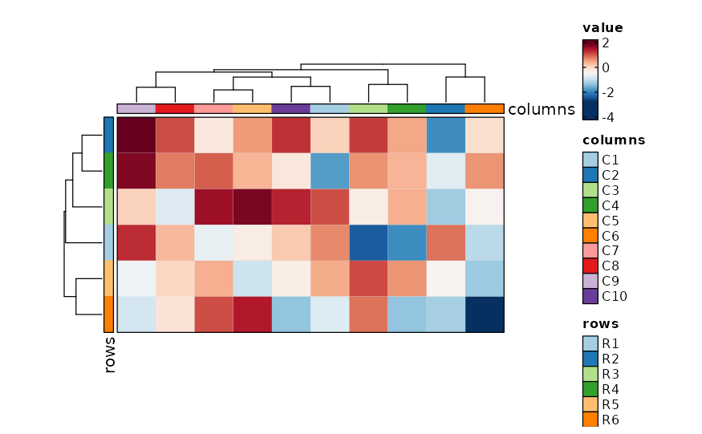
if (requireNamespace("cluster", quietly = TRUE)) {
# use a different color palette
# change the main legend title
# show row names (legend will be hidden)
# show column names
# change the row name annotation name and side
# change the column name annotation name
Heatmap(matrix_data, palette = "viridis", values_by = "z-score",
show_row_names = TRUE, show_column_names = TRUE,
rows_name = "Features", row_names_side = "left",
columns_name = "Samples")
}
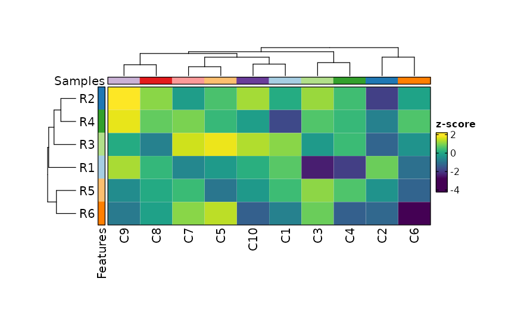
if (requireNamespace("cluster", quietly = TRUE)) {
# flip the heatmap
Heatmap(matrix_data, palette = "viridis", values_by = "z-score",
show_row_names = TRUE, show_column_names = TRUE,
rows_name = "Features", row_names_side = "left",
columns_name = "Samples", flip = TRUE)
}
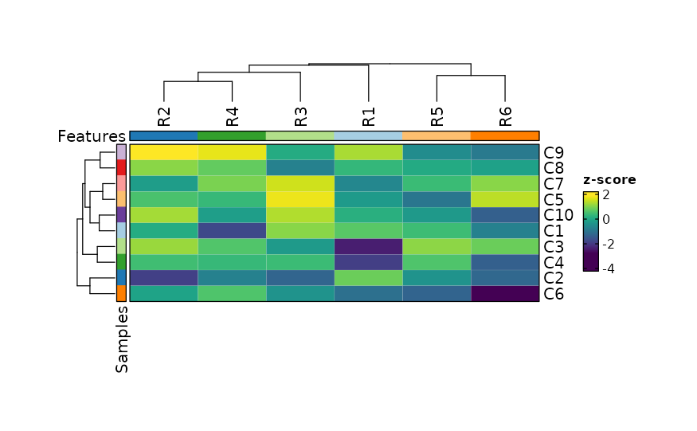
if (requireNamespace("cluster", quietly = TRUE)) {
# add annotations to the heatmap
rows_data <- data.frame(
rows = paste0("R", 1:6),
group = sample(c("X", "Y", "Z"), 6, replace = TRUE)
)
Heatmap(matrix_data, rows_data = rows_data,
row_annotation = list(Group = list(col = "group", palette = "Spectral"))
)
}
#> Warning: [Heatmap] Assuming 'row_annotation_agg["Group"] = dplyr::first' for the simple annotation
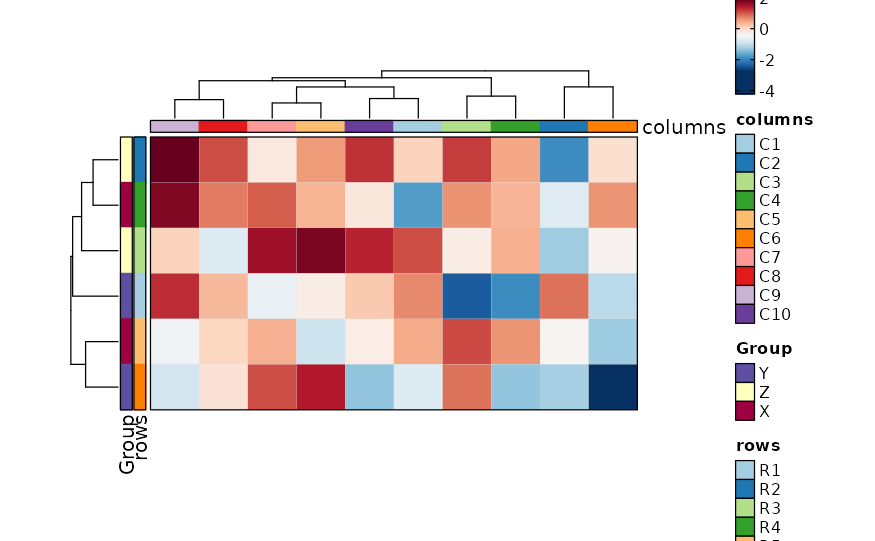
if (requireNamespace("cluster", quietly = TRUE)) {
Heatmap(matrix_data, rows_data = rows_data,
rows_split_by = "group"
)
}
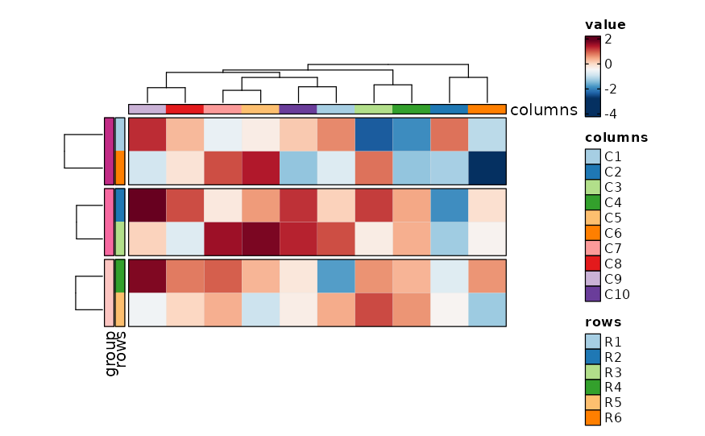
if (requireNamespace("cluster", quietly = TRUE)) {
# use label annotation for split groups (shows group labels inside colored blocks)
Heatmap(matrix_data, rows_data = rows_data,
rows_split_by = "group",
row_annotation = list(.row.split = list(
type = "label",
params = list(
border = FALSE,
labels_gp = grid::gpar(col = "white", fontsize = 12),
labels_rot = 0
)
))
)
}
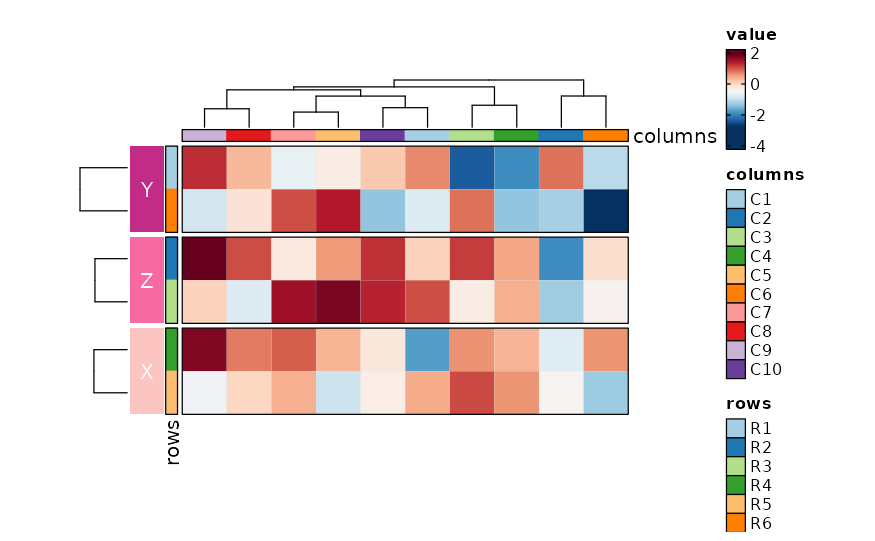
if (requireNamespace("cluster", quietly = TRUE)) {
# label annotation for column splits
columns_data <- data.frame(
columns = paste0("C", 1:10),
batch = rep(c("A", "B"), each = 5)
)
Heatmap(matrix_data, columns_data = columns_data,
columns_split_by = "batch",
column_annotation = list(.col.split = list(type = "label"))
)
}
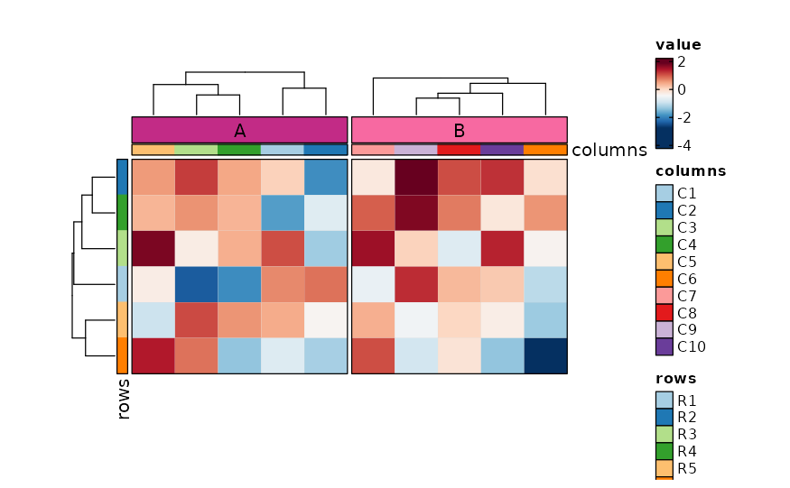
rownames(matrix_data)[1] <- "R12345"
if (requireNamespace("cluster", quietly = TRUE)) {
# label annotation for name annotations: show row/column names as colored labels
Heatmap(matrix_data, rows_data = rows_data,
row_annotation = list(.row = list(
type = "label", palette = "Set2", side = "right",
params = list(labels_rot = 150)
)),
column_annotation = list(.col = list(
type = "label", params = list(labels_rot = 90)
))
)
}
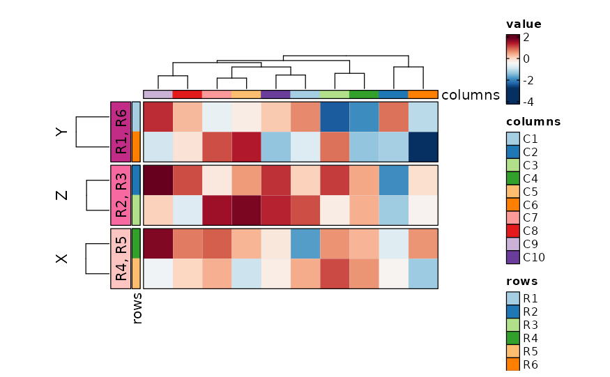
if (requireNamespace("cluster", quietly = TRUE)) {
# add labels to the heatmap
Heatmap(matrix_data, rows_data = rows_data,
rows_split_by = "group", cell_type = "label",
base_size = 0.8,
label = function(x) ifelse(
x > 0, scales::number(x, accuracy = 0.01), NA
)
)
}
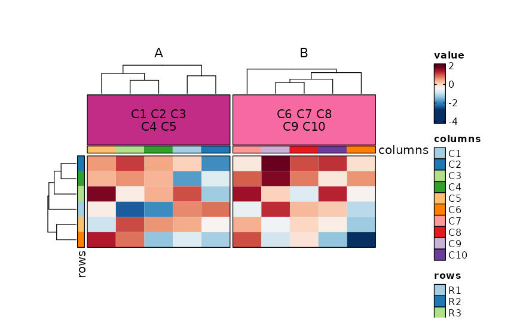
if (requireNamespace("cluster", quietly = TRUE)) {
# add labels based on an external data
pvalues <- matrix(runif(60, 0, 0.5), nrow = 6, ncol = 10)
Heatmap(matrix_data, rows_data = rows_data,
rows_split_by = "group", cell_type = "label",
base_size = 0.8,
label = function(x, i, j) {
pv <- ComplexHeatmap::pindex(pvalues, i, j)
ifelse(pv < 0.01, "***",
ifelse(pv < 0.05, "**",
ifelse(pv < 0.1, "*", NA)))
}
)
}
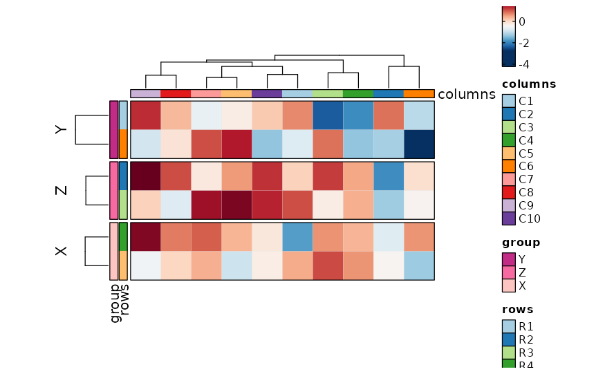
if (requireNamespace("cluster", quietly = TRUE)) {
# Set label color, size, legend and order
pvalues <- matrix(runif(60, 0, 0.5), nrow = 6, ncol = 10)
Heatmap(matrix_data, rows_data = rows_data,
rows_split_by = "group", cell_type = "label",
base_size = 0.6,
label_name = "Significance",
label = function(x, i, j) {
pv <- ComplexHeatmap::pindex(pvalues, i, j)
if (pv < 0.01)
list("***", color = "red", size = 12, legend = "p < 0.01", order = 1)
else if (pv < 0.05)
list("**", color = "orange", size = 10, legend = "p < 0.05", order = 3)
else if (pv < 0.1)
list("*", color = "yellow", size = 8, legend = "p < 0.1", order = 2)
else NA
}
)
}
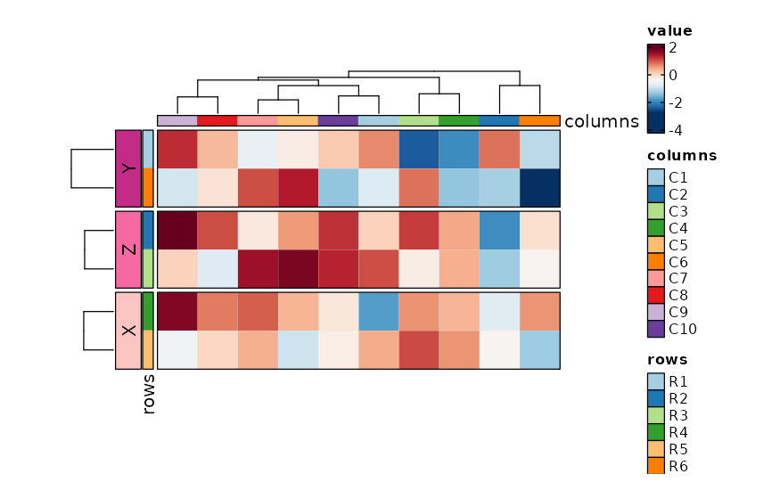
if (requireNamespace("cluster", quietly = TRUE)) {
# add marks
Heatmap(matrix_data, rows_data = rows_data,
rows_split_by = "group", cell_type = "mark",
mark = function(x, i, j) {
pv <- ComplexHeatmap::pindex(pvalues, i, j)
if(pv < 0.01) list("[x]", legend = "p < 0.01")
else if (pv < 0.02) list("[o]", legend = "p < 0.02")
else if (pv < 0.03) list("[-]", legend = "p < 0.03")
else if (pv < 0.05) list("[()]", legend = "p < 0.05")
else if (pv < 0.06) list("+", legend = "p < 0.06")
else if (pv < 0.07) list("x", legend = "p < 0.07")
else if (pv < 0.08) list("[/]", legend = "p < 0.08")
else if (pv < 0.09) list("[\\]", legend = "p < 0.09")
else NA
}
)
}
 if (requireNamespace("cluster", quietly = TRUE)) {
# add labels and marks
Heatmap(matrix_data, rows_data = rows_data,
rows_split_by = "group", cell_type = "mark+label",
label = scales::label_number(accuracy = 0.01),
mark = function(x, i, j) {
pv <- ComplexHeatmap::pindex(pvalues, i, j)
if(pv < 0.01) list("{}", legend = "p < 0.01")
else if(pv < 0.05) list("[]", legend = "p < 0.05")
else NA
},
mark_size = 1.5, mark_color = "red"
)
}
if (requireNamespace("cluster", quietly = TRUE)) {
# add labels and marks
Heatmap(matrix_data, rows_data = rows_data,
rows_split_by = "group", cell_type = "mark+label",
label = scales::label_number(accuracy = 0.01),
mark = function(x, i, j) {
pv <- ComplexHeatmap::pindex(pvalues, i, j)
if(pv < 0.01) list("{}", legend = "p < 0.01")
else if(pv < 0.05) list("[]", legend = "p < 0.05")
else NA
},
mark_size = 1.5, mark_color = "red"
)
}
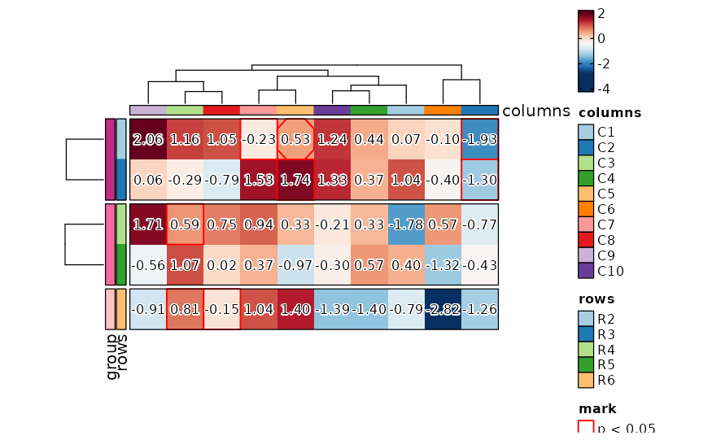
if (requireNamespace("cluster", quietly = TRUE)) {
# quickly simulate a GO board
go <- matrix(sample(c(0, 1, NA), 81, replace = TRUE), ncol = 9)
Heatmap(
go,
# Do not cluster rows and columns and hide the name annotations
# Use .row/.col aliases to disable the built-in name annotations
cluster_rows = FALSE, cluster_columns = FALSE,
row_annotation = list(.row = list(params = FALSE)),
column_annotation = list(.col = list(params = FALSE)),
show_row_names = FALSE, show_column_names = FALSE,
# Set the legend items
values_by = "Players", legend_discrete = TRUE,
legend_items = c("Player 1" = 0, "Player 2" = 1),
# Set the pawns
cell_type = "dot", dot_size = function(x) ifelse(is.na(x), 0, 10),
dot_size_name = NULL, # hide the dot size legend
palcolor = c("white", "black"),
# Set the board
add_reticle = TRUE,
# Set the size of the board
width = ggplot2::unit(105, "mm"), height = ggplot2::unit(105, "mm"))
}
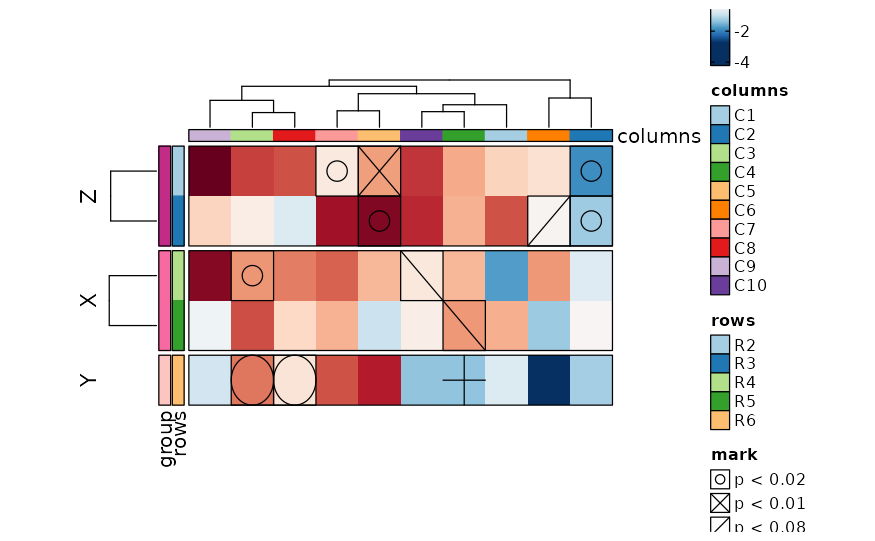
if (requireNamespace("cluster", quietly = TRUE)) {
# Make the row/column name annotation thicker using the .row/.col aliases
Heatmap(matrix_data,
column_annotation = list(.col = list(params = list(height = 5))),
row_annotation = list(.row = list(params = list(width = 5))))
}
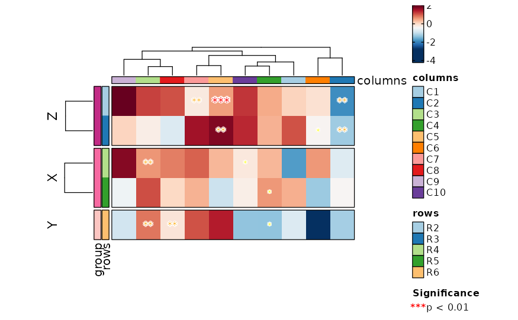
if (requireNamespace("cluster", quietly = TRUE)) {
# Per-annotation side control: row name annotation on the right,
# all other row annotations on the left (.default)
rows_data2 <- data.frame(
rows = sample(paste0("R", 1:6), 60, replace = TRUE),
group = sample(c("X", "Y"), 60, replace = TRUE),
score = runif(60)
)
Heatmap(matrix_data, rows_data = rows_data2,
rows_split_by = "group",
row_annotation = list(
.default = list(side = "left"),
.row = list(side = "right"),
Score = "score"
),
show_row_names = TRUE
)
}
 if (requireNamespace("cluster", quietly = TRUE)) {
# Move all row annotations to the right side
Heatmap(matrix_data, rows_data = rows_data2,
rows_split_by = "group",
row_annotation = list(
.default = list(side = "right"),
Score = "score"
),
show_row_names = TRUE
)
}
if (requireNamespace("cluster", quietly = TRUE)) {
# Move all row annotations to the right side
Heatmap(matrix_data, rows_data = rows_data2,
rows_split_by = "group",
row_annotation = list(
.default = list(side = "right"),
Score = "score"
),
show_row_names = TRUE
)
}
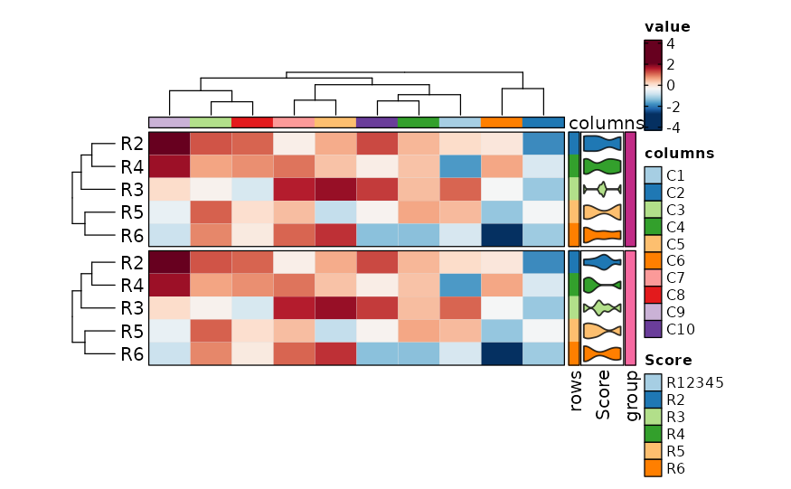
if (requireNamespace("cluster", quietly = TRUE)) {
# Split and name annotations on opposite sides:
# split annotation on the default left, name annotation on the right
Heatmap(matrix_data, rows_data = rows_data2,
rows_split_by = "group",
row_annotation = list(
.default = list(side = "left"),
.row = list(side = "right")
),
show_row_names = TRUE
)
}
 if (requireNamespace("cluster", quietly = TRUE)) {
# Row name label annotation on the right side (text rotated 90° clockwise)
Heatmap(matrix_data, rows_data = rows_data2,
row_annotation = list(.row = list(
type = "label", palette = "Set2", side = "right"
)),
show_row_names = TRUE
)
}
if (requireNamespace("cluster", quietly = TRUE)) {
# Row name label annotation on the right side (text rotated 90° clockwise)
Heatmap(matrix_data, rows_data = rows_data2,
row_annotation = list(.row = list(
type = "label", palette = "Set2", side = "right"
)),
show_row_names = TRUE
)
}
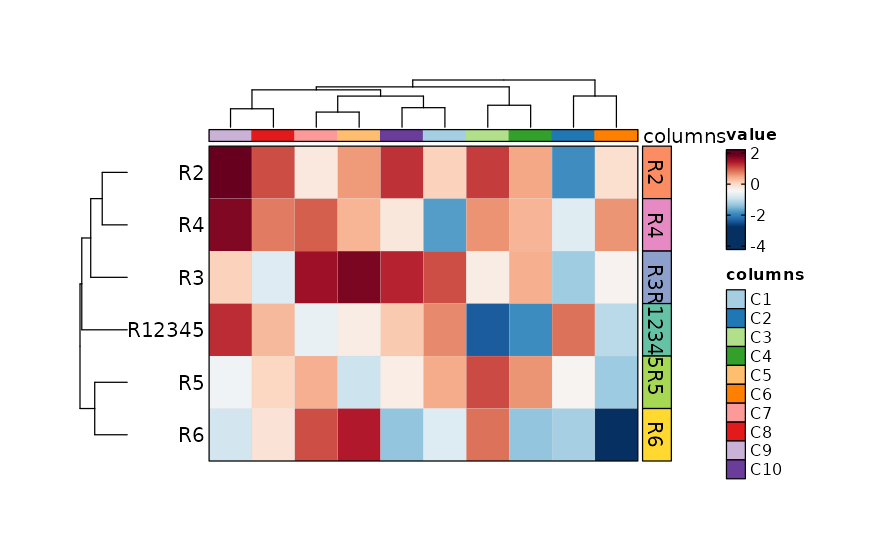
# Use long form data
N <- 500
data <- data.frame(
value = rnorm(N),
c = sample(letters[1:8], N, replace = TRUE),
r = sample(LETTERS[1:5], N, replace = TRUE),
p = sample(c("x", "y"), N, replace = TRUE),
q = sample(c("X", "Y", "Z"), N, replace = TRUE),
a = as.character(sample(1:5, N, replace = TRUE)),
p1 = runif(N),
p2 = runif(N)
)
if (requireNamespace("cluster", quietly = TRUE)) {
Heatmap(data, rows_by = "r", columns_by = "c", values_by = "value",
rows_split_by = "p", columns_split_by = "q", show_column_names = TRUE)
}
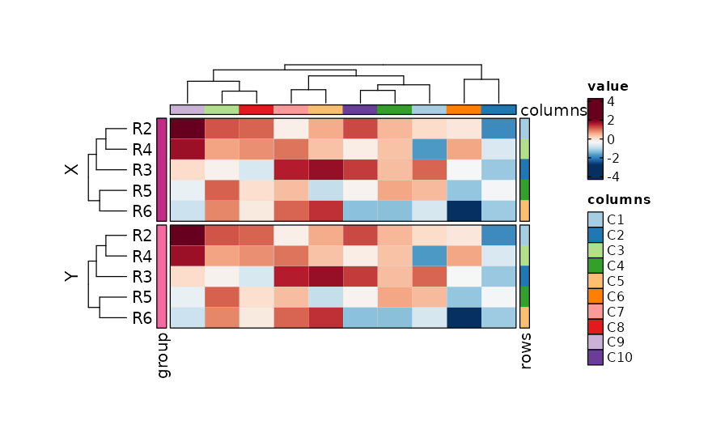
if (requireNamespace("cluster", quietly = TRUE)) {
# split into multiple heatmaps
Heatmap(data,
values_by = "value", columns_by = "c", rows_by = "r", split_by = "p",
upper_cutoff = 2, lower_cutoff = -2, legend.position = c("none", "right"),
design = "AAAAAA#BBBBBBB"
)
}
 if (requireNamespace("cluster", quietly = TRUE)) {
# cell_type = "bars" (default is "tile")
Heatmap(data, values_by = "value", rows_by = "r", columns_by = "c",
cell_type = "bars")
}
if (requireNamespace("cluster", quietly = TRUE)) {
# cell_type = "bars" (default is "tile")
Heatmap(data, values_by = "value", rows_by = "r", columns_by = "c",
cell_type = "bars")
}
 if (requireNamespace("cluster", quietly = TRUE)) {
p <- Heatmap(data, values_by = "value", rows_by = "r", columns_by = "c",
cell_type = "dot", dot_size = length, dot_size_name = "data points",
add_bg = TRUE, add_reticle = TRUE)
p
}
if (requireNamespace("cluster", quietly = TRUE)) {
p <- Heatmap(data, values_by = "value", rows_by = "r", columns_by = "c",
cell_type = "dot", dot_size = length, dot_size_name = "data points",
add_bg = TRUE, add_reticle = TRUE)
p
}
 if (requireNamespace("cluster", quietly = TRUE)) {
dot_size_data <- as.matrix(p$data)
# Make it big so we can see if we get the right indexing
# for dot_size function
dot_size_data["A", "a"] <- max(dot_size_data) * 2
Heatmap(data, values_by = "value", rows_by = "r", columns_by = "c",
cell_type = "dot", dot_size_name = "data points",
dot_size = function(x, i, j) ComplexHeatmap::pindex(dot_size_data, i, j),
show_row_names = TRUE, show_column_names = TRUE,
add_bg = TRUE, add_reticle = TRUE)
}
if (requireNamespace("cluster", quietly = TRUE)) {
dot_size_data <- as.matrix(p$data)
# Make it big so we can see if we get the right indexing
# for dot_size function
dot_size_data["A", "a"] <- max(dot_size_data) * 2
Heatmap(data, values_by = "value", rows_by = "r", columns_by = "c",
cell_type = "dot", dot_size_name = "data points",
dot_size = function(x, i, j) ComplexHeatmap::pindex(dot_size_data, i, j),
show_row_names = TRUE, show_column_names = TRUE,
add_bg = TRUE, add_reticle = TRUE)
}
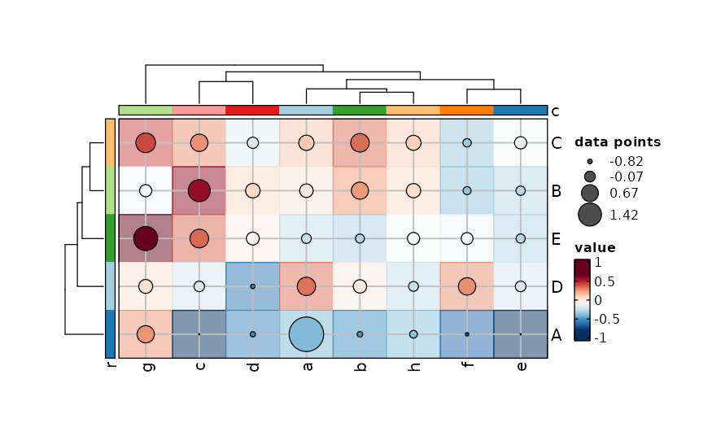
if (requireNamespace("cluster", quietly = TRUE)) {
Heatmap(data, values_by = "value", rows_by = "r", columns_by = "c",
cell_type = "pie", pie_group_by = "q", pie_size = sqrt,
add_bg = TRUE, add_reticle = TRUE)
}
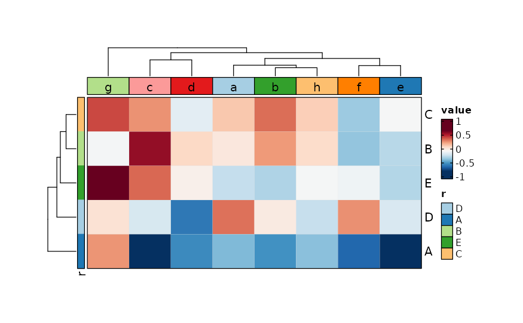
if (requireNamespace("cluster", quietly = TRUE)) {
Heatmap(data, values_by = "value", rows_by = "r", columns_by = "c",
cell_type = "violin", add_bg = TRUE, add_reticle = TRUE)
}
 if (requireNamespace("cluster", quietly = TRUE)) {
Heatmap(data, values_by = "value", rows_by = "r", columns_by = "c",
cell_type = "boxplot", add_bg = TRUE, add_reticle = TRUE)
}
if (requireNamespace("cluster", quietly = TRUE)) {
Heatmap(data, values_by = "value", rows_by = "r", columns_by = "c",
cell_type = "boxplot", add_bg = TRUE, add_reticle = TRUE)
}
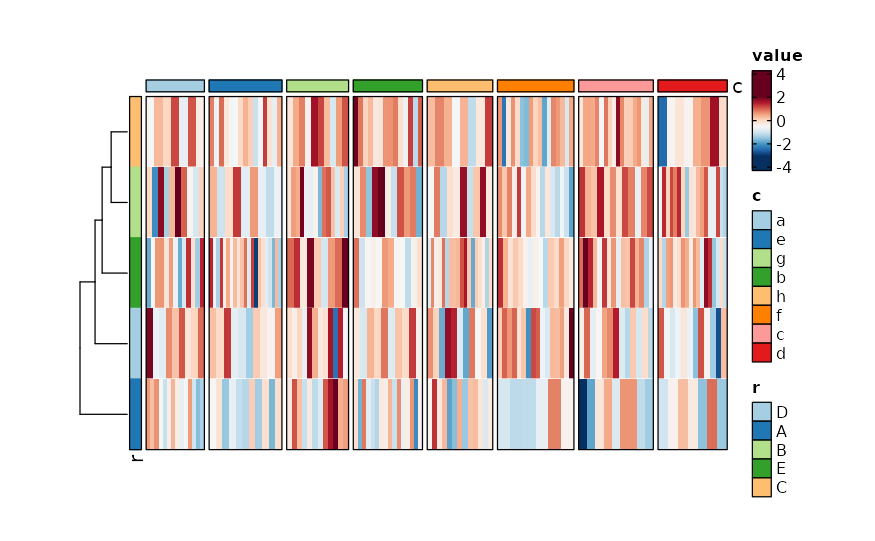
if (requireNamespace("cluster", quietly = TRUE)) {
Heatmap(data,
values_by = "value", rows_by = "r", columns_by = "c",
column_annotation = list(
r1 = list(col = "p", type = "ring",
params = list(height = grid::unit(10, "mm"), show_legend = FALSE)),
r2 = list(col = "q", type = "bar"),
r3 = list(col = "p1", type = "violin",
params = list(height = grid::unit(18, "mm")))
),
row_annotation = list(
.default = list(side = "right"),
q = list(type = "pie", params = list(width = grid::unit(12, "mm"))),
p2 = list(type = "density"),
a = list(type = "simple")
),
show_row_names = TRUE, show_column_names = TRUE
)
}
#> Warning: [Heatmap] Assuming 'row_annotation_agg["a"] = dplyr::first' for the simple annotation
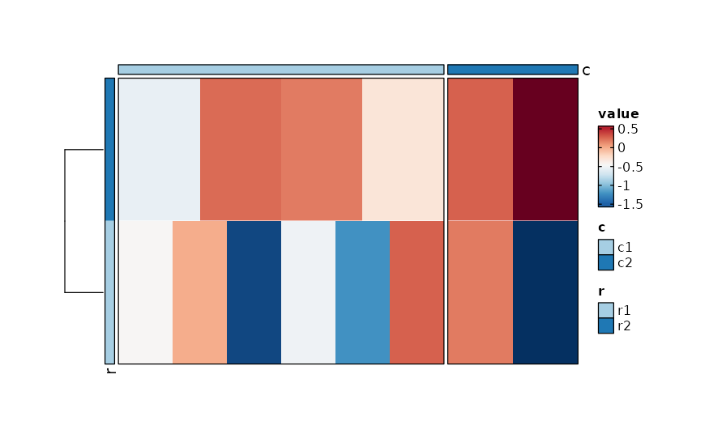
if (requireNamespace("cluster", quietly = TRUE)) {
Heatmap(data,
values_by = "value", rows_by = "r", columns_by = "c",
split_by = "p", palette = list(x = "Reds", y = "Blues")
)
}
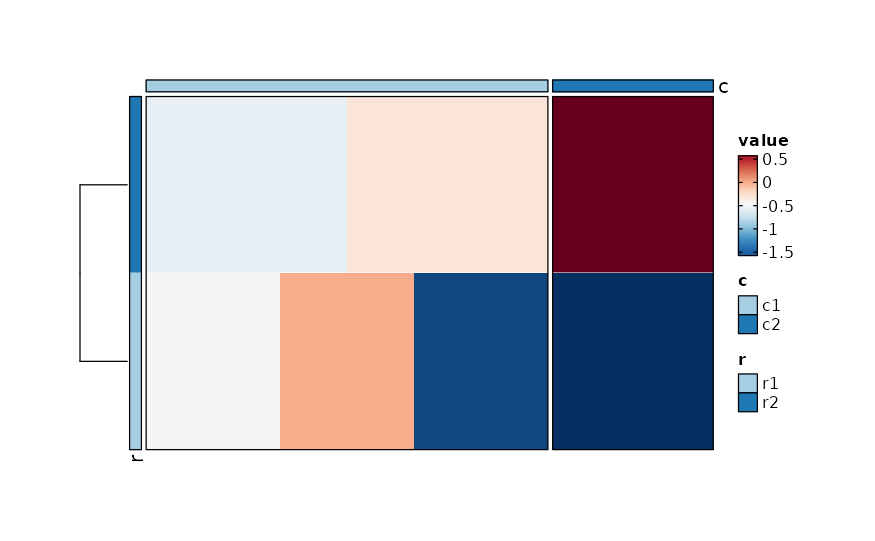
if (requireNamespace("cluster", quietly = TRUE)) {
# implies in_form = "wide-rows"
Heatmap(data, rows_by = c("p1", "p2"), columns_by = "c")
}
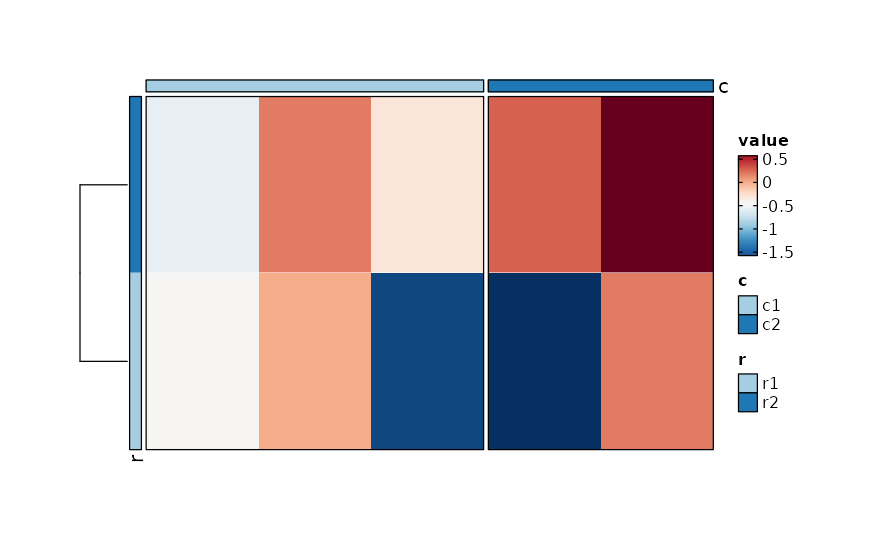
if (requireNamespace("cluster", quietly = TRUE)) {
# implies wide-columns
Heatmap(data, rows_by = "r", columns_by = c("p1", "p2"))
}
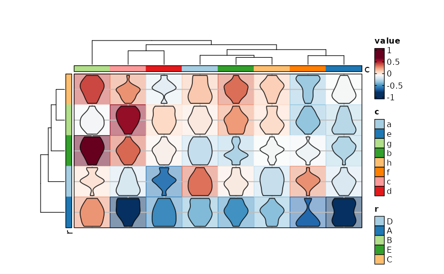
# }